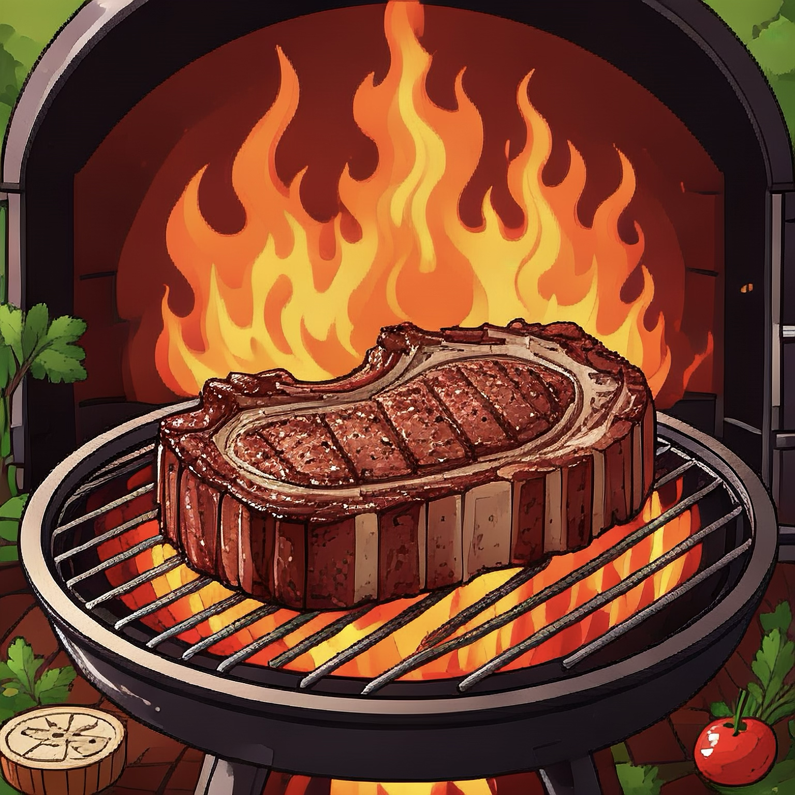

Homepage

Ribeye Steak
This is just my absolute favorite dish, I could honestly eat it just about every day!
Ingridents
- 16 ounce cut of ribeye steak
- Seasoinings: Personally I like to keep it simple with just salt and pepper
- Avocado Oil
- Shallots
- Garlic Cloves
- Thyme
- Butter
Steps
Season the steak
Pat down steak dry with a paper towl. Season both sides of the steak with a generous amount of salt and pepper or seasoing of choise.
Heat the pan
Heat a thin layer of avocado oil in a cast iron skillet on high heat until oil starts to shimmer and lightly smoke
Sear the steak
Slowly place steak onto the hot pan, slightly reduct the heat, and let it cook for 1 minute to allow the steak get a crust on it's surface
Flip and sear
Flip the steak and allow the other side to sear as well for 1 minute
Flavoring
After the minute is up, reduce the heat to low and go ahead and the butter, shallots, garlic, and thyme to the pan
Basting
Once the butter is melted, we tilt the pan and have the steak on the opposite side and with a spoon bath the steak with the butter and herbs for about two minutes
Rest the steak
After the two minutes are up, remove the steak from the pan and allow it to rest for a few minutes
Cut and enjoy! 😊
Your steak is now ready, just slice against the grain and serve, and enjoy your perfectly cooked steak!
Back to recipes